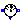
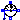

This package contains potential, voltage, and current sensors.
Extends from Modelica.Icons.Library (Icon for library).
| Name | Description |
|---|---|
| Sensor to measure the potential | |
|  VoltageSensor | Sensor to measure the voltage between two pins |
| CurrentSensor | Sensor to measure the current in a branch |
|  PowerSensor | Sensor to measure the power |
| Name | Description |
|---|---|
| p | pin to be measured |
| phi | Absolute voltage potential as output signal |
| Name | Description |
|---|---|
| p | positive pin |
| n | negative pin |
| v | Voltage between pin p and n (= p.v - n.v) as output signal |
| Name | Description |
|---|---|
| p | positive pin |
| n | negative pin |
| i | current in the branch from p to n as output signal |
 Modelica.Electrical.Analog.Sensors.PowerSensor
Modelica.Electrical.Analog.Sensors.PowerSensor
This power sensor measures instantaneous electrical power of a singlephase system and has a separated voltage and current path. The pins of the voltage path are pv and nv, the pins of the current path are pc and nc. The internal resistance of the current path is zero, the internal resistance of the voltage path is infinite.
| Name | Description |
|---|---|
| pc | Positive pin, current path |
| nc | Negative pin, current path |
| pv | Positive pin, voltage path |
| nv | Negative pin, voltage path |
| power |